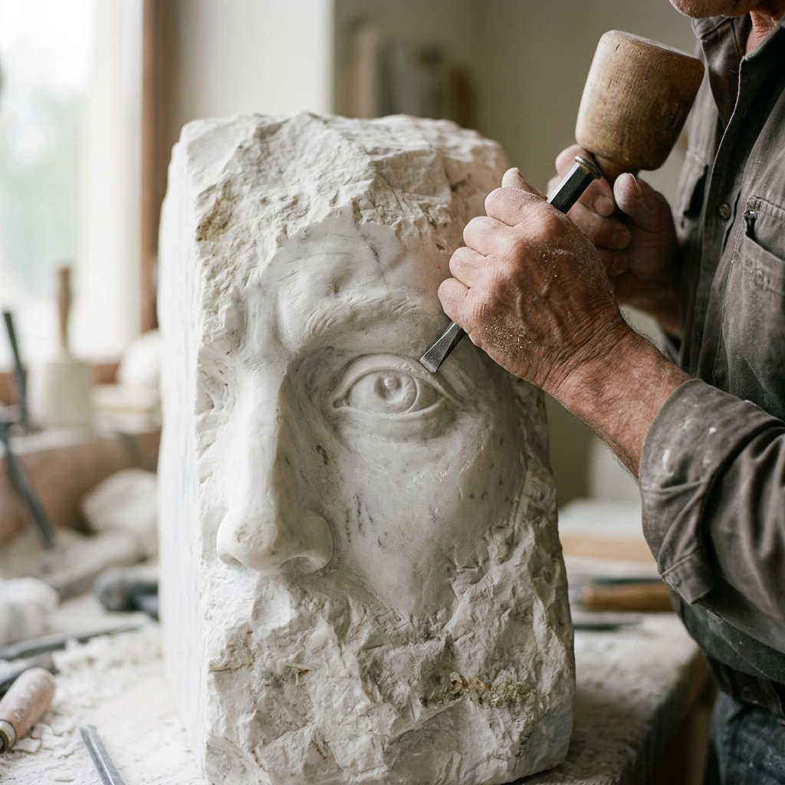

Kultura nije tek ono što činimo; ona je način na koji doživljavamo svijet. Christopher Dawson, Luis Barragán, Joseph Pieper i Roger Scruton istražuju zašto ljepota nije luksuz, već temeljni uvjet za uistinu ljudski život.
Tekst 1 — Christopher Dawson
Dinamika svjetske povijesti: Kultura kao živo jedinstvo
Christopher Dawson tvrdi da razumijevanje kulture zahtijeva "gotovo nadljudsku nepristranost" i shvaćanje društvene tradicije kao živog jedinstva. Upravo kroz umjetnost pronalazimo most za prelazak jaza međusobnog nerazumijevanja.
🎨 Društveni život kao umjetnička aktivnost
Dawson sugerira da je društvena aktivnost po svojoj prirodi stvaralačka. Čovjek je biće koje koristi oruđa, a od samih početaka to je oruđe bilo umjetničko koliko i praktično. Razumjeti društvo znači razumjeti njegovu vitalnu aktivnost u najintimnijim i najkreativnijim trenucima.
- ›Most umjetnosti: Umjetnost prelazi jaz međusobnog nerazumijevanja koji razdvaja kulture.
- ›Živo jedinstvo: Kultura se mora razumjeti kao vizija koju dijele oni u zajedničkom iskustvu.
- ›Izvan znanosti: Statističke i dokumentarne metode nikada ne mogu dokučiti bitnu razliku u kvaliteti koja čini kulturu.
"Samo gledajući sam društveni život kao umjetničku aktivnost možemo razumjeti njegovo puno značenje."
— Christopher Dawson
Tekst 2 — Luis Barragán
Arhitektura ljepote
U svom govoru povodom primanja Pritzkerove nagrade, arhitekt Luis Barragán žali što su moderne publikacije prognale riječi poput ljepote, inspiracije i očaranosti. Poziva na povratak "uzvišenom činu poetske mašte."
Tišina
"U mojim fontanama tišina pjeva." Arhitektura bi trebala pružati blagi žamor tišine.
Vedrina
"Veliki i pravi protuotrov protiv tjeskobe i straha," koji bi trebao biti stalni gost u svakom domu.
Vrtovi
Partnerstvo s prirodom, stvaranje "mjesta odmora i mirnog užitka."
Barragán naglašava da su religija i mit korijeni umjetničkog fenomena. Bez "želje za Bogom," planet bi bio "tužna pustoš ružnoće."

Umjetnost gledanja: Gledanje s nevinošću, ne samo racionalnom analizom.
Tekst 3 — Joseph Pieper
Ponovno učenje gledanja
Pieper upozorava da je naša "duhovna sposobnost" opažanja stvarnosti u opadanju. Paradoksalno, u svijetu beskonačne vidljivosti, postajemo slijepi.
Vizualna buka
Glavna prepreka opažanju. Poput zvučnih smetnji, ona zaglušuje stvarnost. "Zavodljive prividnosti" industrije zabave pretvaraju nas u pasivne potrošače, umjesto da budemo gospodari vlastitog pogleda.
Požuda (Concupiscentia)
"Uništavač" vida — nemirna i površna potraga za podražajima radi njih samih. Ona nam oduzima "kritičku distancu" potrebnu za unutarnju autonomiju, ostavljajući nas podložnima manipulaciji.
Umjetničko stvaralaštvo kao ultimativni lijek
Vizualni post
Namjerno suzdržavanje od "vizualne buke" kako bi se očistila duhovna leća.
Aktivno stvaranje
Kiparstvo ili pisanje tjeraju na svjež pogled, prisiljavajući nas da vidimo "vidljivo otajstvo" kakvo ono uistinu jest.
"Umjetnik će moći novim očima opaziti obilno bogatstvo stvarnosti."
“Vidjeti stvari prvi je korak prema onom izvornom i temeljnom intelektualnom poimanju stvarnosti, koje čini bit čovjeka kao duhovnog bića.
— Joseph Pieper
Praktično promišljanje
Digitalni paradoks
Razmislite o razlici između listanja kratkih videa na društvenim mrežama — konzumiranja ogromne količine podataka bez ikakvog pamćenja ili koristi — naspram čitanja jednog poglavlja složene knjige. Jedno je pasivna poplava buke; drugo je duhovni čin koji izvlači stvarno znanje.
Tekst 4 — Roger Scruton
Zašto je ljepota važna
Filozof Roger Scruton identificira "kult ružnoće" u modernoj umjetnosti, gdje je cilj uznemiriti ili uvrijediti, a ne pružiti smisao. On to suprotstavlja transcendentnoj naravi ljepote.
| Stup | Uvid |
|---|---|
| Korist naspram ljepote | "Ako nešto gradite samo da bi bilo korisno, to brzo postaje beskorisno. Gradite lijepo, i ljudi će to čuvati." Ljepota je ultimativni funkcionalni zahtjev. |
| Transcendentno | Ljepota je "posjetitelj iz drugog svijeta," koji pruža most do više, duhovne stvarnosti. Ona je znak da smo u svijetu kod kuće. |
| Utjeha | Ljepota preobražava patnju, uzimajući kaos života i dajući mu oblik i nadu. Ona pruža utjehu u svijetu koji može biti okrutan i ružan. |